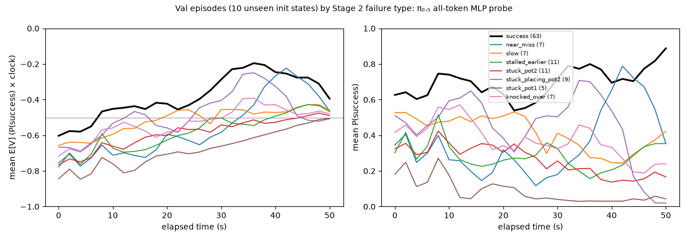

LIBERO moka pots (libero_10 task 8): value functions for π₀.₅ and advantage-conditioned fine-tuning
Summary
Goal. Learn a value function V that tracks task progress for π₀.₅ on LIBERO (moka pots), then test whether V improves the policy through advantage-conditioned fine-tuning (RECAP).
Previously (last meeting, Oct 27)
Mulligan Insert Marker (real robot): V beat every trivial predictor and recognised progress late in an episode; stacking a 2 s-old frame with the current one was the one clear win, on stalls. Week 6 →
Its advantage labels pointed the right way but were weak (72% of failure-ending frames came out positive). Week 6 →
Offline data cannot show whether V improves a policy, so we moved to LIBERO, where π₀.₅ can be fine-tuned and re-run. Setup →
What we found this week
The main trade-off: π₀.₅-based value functions are the most accurate (LoRA MAE 0.155 vs ResNet 0.189), but the ResNet is ~1.5–2× steadier (change SNR 0.247 vs 0.13–0.17) and reacts far more when the first pot lands (+0.094 vs +0.03–0.06). Spotlight + episode player →
π₀.₅'s accuracy comes from recognising which layouts are hard. The ResNet is the better progress tracker, and advantages are built from progress. Evidence →
π₀.₅'s flicker is its success belief switching on and off (~96% of the noise). Frozen π₀.₅ even knows a pot is on the stove (probe AUC 0.96–0.99), but the value head does not use it. Evidence →
There are two separate noise sources, each about halving steadiness: π₀.₅'s frozen language-model layers, and fine-tuning SigLIP. Frozen SigLIP is as steady as an ImageNet ResNet. Evidence →
The one data change that clearly helped was layout variety: a fresh scene per episode doubled frozen π₀.₅'s steadiness. Head, loss and pre-training fixes did not close the gap. Evidence →Smaller experiments →
ResNet advantage labels are better on held-out scenes, so the policy fine-tune starts with them: out-of-fold labels on all 900 rollouts, 70% positive, within-scene AUC 0.74. Evidence →
Working on now
The policy test: a success-only fine-tune of π₀.₅ (the baseline) and an advantage-tagged fine-tune (every frame tagged good or bad by the ResNet value function) train side by side. The success-only run was resubmitted after a data-loader bug was fixed. Jobs →
π₀.₅ out-of-fold labels (fold 2 of 5) for a second advantage-tagged fine-tune: does π₀.₅'s flicker cost task success? Jobs →
Pinpointing the noise, and testing a fix: π₀.₅'s vision encoder alone as the value backbone (done, does not beat the ResNet: frozen is steady but less accurate, and even a 10× gentler fine-tune buys accuracy only by flickering more), plus layer-by-layer probes of π₀.₅'s language model and the same probes on pre-robot PaliGemma weights. Vision-encoder test →
Next steps
Roll out both policy fine-tunes (~330 trials each on held-out scenes, plus the advantage-tagged one with the negative tag as a control). The question: does the advantage-tagged fine-tune beat the success-only one?
Decide the value backbone for real-robot use. SigLIP-only is ruled out (frozen or fine-tuned, it never beats the ResNet), so the choice is the ResNet, a cleaner read-out from π₀.₅'s language model (waits on the layer-by-layer probe), or pre-training the value function.
Then port the value function to pi05_droid on Mulligan (real robot).
Questions and new ideas
For discussion: both RECAP and SeeQ pre-train the value function itself on large multi-task robot data. Should we pre-train V (e.g. on libero_90) rather than tune the backbone?
A VLM backbone (PaliGemma) with and without value pre-training: SeeQ's Table 3 shows the same pattern as ours (big VL model < ResNet without pre-training).
Subtask-scoped values (SeeQ): only the cheap half has been tested. The subtask-head experiment added subtask prediction as an auxiliary head and found no gain on any backbone. SeeQ's full version, where each value is scoped to and conditioned on the current subtask, is untested: it changes the value target and the advantage definition. Is it still worth trying after that null result? Subtask-head result →
Rohan's-data option: in simulation it is the same as the success-only fine-tune. Use his real DROID rollouts, or a second round of filtered imitation?
Glossary: what the metrics mean
V(o)
The value function: from a single camera frame, how well is this episode going (scaled so −1 = a failure that ran the whole clock, 0 = success right now). It is trained on the frozen π₀.₅ policy's own rollouts.
change SNR 2 s
How cleanly V's moment-to-moment changes track real progress. Take V now minus V two seconds ago; the 'signal' is how much more that change goes up in episodes that end in success than in ones that fail (compared at the same time step); the 'noise' is how much it jumps around anyway. SNR = signal / noise. Higher = a steadier V that moves for real reasons. This is what the advantage labels for policy training are built from.
milestone
Does V go up when the first moka pot lands on the stove (the halfway point of the task)? Mean V in the 5 s after minus the 5 s before, minus the same difference on episodes where no pot landed at that time. 0 = V ignores the event; a clock+event oracle gives +0.34.
MAE
Mean absolute error of the predicted value vs the true return on the 10 held-out scenes (120 episodes). Lower = more accurate level. 'MAE succ>20 s' = the same on successful episodes after 20 s, where progress matters most.
AUC 5/10 s
How well V at 5 or 10 s into an episode separates eventual successes from failures (0.5 = chance). Mostly measures recognising whether a scene is easy or hard.
fixed / fresh layouts
LIBERO ships 50 fixed starting layouts per task; 'fixed' training data = 375 episodes on 25 of them (15 repeats each); 'fresh' = 375 episodes each from a newly sampled layout; 'fixed+fresh' = 825 episodes. Every model is tested on the same 10 held-out fixed layouts.
advantage label
RECAP-style label per frame: positive if V two seconds later (plus the step cost) beats V now by more than a threshold set so 70% of frames are positive. Used to tag each frame in the advantage-tagged fine-tune.
out-of-fold labels
The train rollouts are split into 5 groups; each group is labelled by a value function trained on the other 4, so no rollout is labelled by a V that has already seen it (otherwise V memorises the outcome and every advantage is ~0).
success-only / advantage-tagged fine-tune
The two policy fine-tunes being compared: π₀.₅ trained only on its successful rollouts, vs π₀.₅ trained on all rollouts with an advantage tag per frame (RECAP).
frozen π₀.₅ / LoRA
'Frozen π₀.₅': π₀.₅'s weights are kept fixed and a small value head is trained on top (35 M parameters, one query token reading every layer of the frozen backbone, 201-bin value head). 'LoRA' additionally trains low-rank adapters in π₀.₅'s language model.
Spotlight: ResNet vs π₀.₅, accuracy vs flicker vs progress
The main question this week: π₀.₅'s value functions are the most accurate (lowest MAE), but their value flickers from frame to frame and barely reacts when the robot makes real progress (the first pot landing on the stove). The fine-tuned ResNet-18 is less accurate on average but steadier, and it steps up at the milestone. For advantage labels, which are built from changes in V, steadiness and progress matter more than average accuracy.
Accuracy vs steadiness, validation set
Each dot is one value function (mean over seeds, bars = ±1 sd). Further right = less accurate; higher = steadier,
more meaningful changes. Hover a dot for details.
Does V react when the pot lands on the stove?
Milestone response: rise in V around the first pot placement, minus the rise in time-matched episodes without one.
Higher = V tracks task progress.
Accuracy: π₀.₅ LoRA has the lowest MAE (0.155, 1 seed), then frozen π₀.₅ (0.170 ± 0.013, 3 seeds); the ResNet is at 0.189 ± 0.003.
Steadiness: the ResNet's change SNR is 0.247 ± 0.025, against 0.166 for frozen π₀.₅ and 0.13 for LoRA and fine-tuned SigLIP. π₀.₅'s changes are 1.5–2× noisier relative to the signal.
Progress: at the first pot placement the ResNet's V rises +0.094 more than in time-matched episodes without one; π₀.₅ arms rise +0.026 to +0.060.
Where the noise comes from (frozen-encoder comparison): frozen SigLIP features are as steady as a frozen ImageNet ResNet (head SNR 0.172 vs 0.168). Passing them through π₀.₅'s frozen language-model layers, or fine-tuning SigLIP, each roughly halves SNR. The flicker itself is the model switching between “will succeed” and “will fail”.
One episode, four backbones: move the cursor across the chart to scrub the cameras
agent view
wrist
Full table: every value function scored with the same metrics
value function
seeds
MAE ↓
change SNR ↑
milestone ↑
MAE succ. >20 s ↓
AUC 10 s ↑
ResNet-18 fine-tuned, fixed layouts
3
0.211 ± 0.004
0.272 ± 0.028
+0.063 ± 0.023
0.128
0.621
Frozen π₀.₅ + value head, fixed layouts
3
0.180 ± 0.005
0.073 ± 0.012
+0.027 ± 0.019
0.146
0.775
ResNet-18 fine-tuned, fresh layouts
3
0.215 ± 0.005
0.258 ± 0.046
+0.085 ± 0.006
0.148
0.638
Frozen π₀.₅, fresh layouts
3
0.187 ± 0.002
0.157 ± 0.027
+0.044 ± 0.016
0.148
0.799
π₀.₅ LoRA (lr 1e-4), fresh layouts
1
0.179
0.145
+0.044
0.125
0.717
ResNet-18 fine-tuned (fixed+fresh)
3
0.189 ± 0.003
0.247 ± 0.025
+0.094 ± 0.014
0.119
0.740
Frozen π₀.₅ (fixed+fresh)
3
0.170 ± 0.013
0.166 ± 0.025
+0.026 ± 0.015
0.138
0.797
π₀.₅ LoRA lr 1e-4 (fixed+fresh)
1
0.155
0.133
+0.052
0.110
0.788
π₀.₅'s SigLIP, fully fine-tuned (fixed+fresh)
1
0.207
0.129
+0.060
0.223
0.719
π₀.₅'s SigLIP, frozen, end-to-end head (fixed+fresh) [new, not yet in log]
1
0.215
0.221
+0.017
0.194
0.702
ResNet-18, demo pre-trained → fixed+fresh
3
0.184 ± 0.001
0.203 ± 0.019
+0.045 ± 0.010
0.118
0.772
ResNet-18 + subtask head (fixed+fresh)
1
0.195
0.258
+0.104
0.129
0.777
Frozen π₀.₅ + subtask head (fixed+fresh)
3
0.165 ± 0.004
0.148 ± 0.010
+0.038 ± 0.007
0.130
0.795
π₀.₅ LoRA + subtask head (fixed+fresh)
1
0.156
0.140
+0.047
0.107
0.783
π₀.₅'s SigLIP, gently fine-tuned lr 1e-6 (fixed+fresh) [new, not yet in log]
1
0.187
0.107
+0.093
0.150
0.776
Recomputed on 2026-11-03 from each run's val_predictions.parquet with score() of scripts/libero_head_swap.py (120 validation episodes on 10 held-out scenes). Mean ± sample sd over seeds. Episode-player traces are seed 0 of each fixed+fresh model: ResNet 18237895, frozen π₀.₅ 18237898, LoRA 18258391, SigLIP ft 18269859.
In progress now
The policy test asks whether V can actually improve π₀.₅. Two fine-tunes are compared: a success-only fine-tune trains π₀.₅ only on its own successful rollouts (the baseline), and an advantage-tagged fine-tune trains on all rollouts with each frame tagged “Advantage: positive” or “negative” from V, then runs with the positive tag. If the advantage-tagged one wins, V is doing real work. Running it with the negative tag is the control: it should do worse.
Done: labels for the advantage-tagged fine-tune
Out-of-fold ResNet V over the 900 train rollouts (5 folds, each labelled by a V that never saw it): 70% of frames positive, interior positive rate 72.8% in successes vs 65.6% in failures, within-scene AUC 0.74.
Running: π₀.₅ out-of-fold labels (for a second advantage-tagged fine-tune)
Same 5 folds with frozen π₀.₅ as V: folds 0–1 done, fold 2 running, folds 3–4 queued. Asks whether π₀.₅'s flicker costs task success.
Next: rollouts
After training, about 330 LIBERO trials per policy on held-out scenes (needed to separate 65% from 75% success), plus the advantage-tagged fine-tune with the negative tag.
This page is the snapshot from before the Nov 3 meeting. Live job status is on Week 8.
Evidence: main findings
The findings behind the summary, in the order the story unfolded. Each card has the numbers, a chart and the log entry it comes from.
1. Correction: π₀.₅ knows the scene, the ResNet tracks progress
settled 2026-10-30
Looking at the value curves, where does π₀.₅'s advantage actually come from?
Observed: the ResNet is more accurate on successful episodes after 20 s (MAE 0.131 vs 0.216 at 20–30 s); π₀.₅ is better only in the first 20 s.
Observed: π₀.₅'s early edge is recognising hard layouts; within a layout both models are at chance at 0–5 s (AUC 0.53 vs 0.49).
Observed: a value head trained on frozen π₀.₅ (3 seeds) still loses on late-success MAE (0.146 vs 0.128); removing robot state or adding a clock input did not fix it.
Interpretation: π₀.₅ is the better outcome predictor; the ResNet is the better progress tracker, and advantages need the second.
Late-success MAE (successes after 20 s), fixed layouts, 3 seeds (MAE succ>20 s) · lower is better
2. Milestone: does V jump when the first pot lands?
settled 2026-10-29
Does V react to real task progress (first pot on the stove), not just time?
Observed: the ResNet's V jumps (+0.064, positive on 3/3 seeds); the frozen π₀.₅ probe does not (−0.018), and its success belief even dips for ~8 s after placement.
Observed: milestone and dip effects flip sign between seeds for the probes, so every later comparison uses ≥ 3 seeds.
Interpretation: π₀.₅'s good AUC came from scene difficulty and timing, not task progress.
Milestone jump in V (fixed layouts) (Δ V) · higher is better
4. Fresh layouts: the first change that clearly helps π₀.₅
settled 2026-11-01
Does removing repeated layouts (and thus the layout→outcome shortcut) help π₀.₅'s value function?
Observed: halving the repeats per layout cost both models about equally, so more repeats would not close the gap.
Observed: 375 episodes with a new layout each lifted frozen π₀.₅'s SNR 2.1× (0.073 → 0.157) and its milestone (+0.027 → +0.044); the ResNet's SNR stayed ~0.26.
Observed: the late-success MAE gap closed (0.148 vs 0.148), but because the ResNet got worse, not because frozen π₀.₅ got better.
Observed: with fixed+fresh (825), frozen π₀.₅ has lower MAE (0.170 vs 0.189) but the ResNet still leads on SNR (0.247 vs 0.166) and milestone (+0.094 vs +0.026).
Change SNR 2 s by training data (3 seeds each, recomputed) (change SNR 2 s) · higher is better
5. LoRA on π₀.₅: most accurate value function, but noisier
settled 2026-11-02
Does adapting π₀.₅'s language model (LoRA) give a better value function than freezing it?
Observed: the first LoRA run (lr 1e-5) barely moved the weights (~0.1%), so it was not a real test.
Observed: LoRA at lr 1e-4 on fixed+fresh data gives the lowest overall MAE of any model (0.155) and the best late-success MAE (0.110), with a milestone (+0.052) above every frozen-π₀.₅ seed.
Observed: it is noisier than frozen π₀.₅ (SNR 0.133 vs 0.166) and far below the ResNet (0.247). One seed.
Interpretation: adapting the backbone buys accuracy and some progress-tracking, not steadiness.
Overall MAE, fixed+fresh data (recomputed) (MAE) · lower is better
6. The core trade-off: π₀.₅ is more accurate, ResNet is steadier and reacts to progress
settled 2026-11-02
On the same 825-episode data, how do the ResNet and π₀.₅ value functions compare on accuracy, noise and progress?
Observed: π₀.₅ arms win on accuracy (MAE 0.155–0.170 vs 0.189) and early scene recognition (AUC 10 s 0.79–0.80 vs 0.74).
Observed: the ResNet wins on steadiness (SNR 0.247 vs 0.13–0.17) and on reacting when the first pot lands (milestone +0.094 vs +0.026–0.052).
Interpretation: for advantage labels (which use changes in V), steadiness and progress matter more than level, so the ResNet V labels the advantage-tagged fine-tune first.
Shown in the spotlight above: scatter, milestone bars and the episode player.
7. Frozen-encoder comparison: two noise sources, and layout variety matters
open 2026-11-03
Is π₀.₅'s jitter in its image features, added by its language-model layers, or added by fine-tuning?
Observed: frozen π₀.₅ SigLIP is as steady as an ImageNet ResNet (0.172 vs 0.168 at 825 episodes) and better than web SigLIP; robot training did not hurt the vision features.
Observed: two separate drops, each about halving SNR: passing through the frozen language-model layers (0.122 → 0.059) and fine-tuning SigLIP (0.172 → 0.084). Fine-tuning the ResNet costs nothing.
Observed: at equal size (375), fresh layouts lift frozen SigLIP 0.122 → 0.194; adding the fixed episodes lowers it (0.172). It is layout variety, not episode count.
Open: where in the language model the drop starts (per-layer job 18288157; the TITAN attempt failed a numerics self-check).
Same value head on frozen features (head SNR 2 s, 3 seeds) (head SNR 2 s) · higher is better
8. Can π₀.₅'s vision encoder alone beat the ResNet?
settled 2026-11-03
If the noise comes from π₀.₅'s language-model layers, a value function built on its vision encoder (SigLIP) alone might keep π₀.₅'s accuracy without the flicker. Same 825-episode data and recipe as the ResNet; no language model in the path.
Bar for 'more useful than the ResNet': steadiness at or near the ResNet's (SNR ≈ 0.247) and accuracy closer to π₀.₅'s (MAE ≈ 0.16–0.17, AUC ≈ 0.80). Only as steady as the ResNet with no accuracy gain is no reason to switch.
Observed, fully fine-tuned SigLIP (lr 1e-5): overfits by step 1,500; SNR 0.129, MAE 0.207. Fails the bar.
Observed, frozen SigLIP (new today, 1 seed): SNR 0.221, nearly as steady as the ResNet, but MAE 0.215 and AUC 0.70 are worse than the ResNet's, and it barely reacts at the pot placement (+0.017). Fails the bar.
Observed, SigLIP fine-tuned gently (lr 1e-6, 10× lower; new today, 1 seed): MAE 0.187, the same as the ResNet's (0.189), and the biggest reaction at the pot placement of any backbone (+0.093 vs ResNet +0.094). But steadiness drops to SNR 0.107, the lowest of every option tried. Fails the bar.
Verdict: no SigLIP-only variant beats the ResNet. Frozen keeps the steadiness but loses accuracy; any fine-tuning, even 10× gentler, buys back accuracy only by flickering more. The noise is not only in the language model: fine-tuning SigLIP adds its own, at any learning rate tried. Pre-training the value function, or a cleaner read-out from π₀.₅'s language model, are the remaining candidates.
Caveats: one seed (seeds vary by about ±0.025 SNR); no language input, which is fine for this single task but would need adding back for a multi-task value; the head averages SigLIP's 256 image tokens into one vector, which may drop where the pot is. An attention-pooling head is a cheap follow-up if results are close.
Accuracy (MAE vs target), same models (MAE) · lower is better
Is frozen SigLIP a better choice than the ResNet in theory?
The idea behind using a VLA backbone: skip the expensive VLM pre-training that RECAP and SeeQ do, but still inherit what that pre-training teaches. We found the noise comes largely from π₀.₅'s language-model layers, so its frozen vision encoder alone looked like a good compromise. In our tests it does not beat the ResNet on either axis: it is nearly as steady (SNR 0.221 vs 0.247) but the least accurate option (MAE 0.215 vs 0.189). Fine-tuning it gently brings accuracy back to the ResNet's level (MAE 0.187) but makes it the least steady option (SNR 0.107). The accuracy π₀.₅ adds over the ResNet comes from the same language-model layers that add the noise.
What pre-training gives RECAP and SeeQ has two parts:
Visual knowledge: recognising objects, the gripper, contact. SigLIP has this, and π₀.₅'s robot training tuned it toward robot images.
Task understanding: linking the image to the instruction, knowing which step of the task you're on, what success looks like. This lives mostly in the language-model layers, where image and instruction are combined.
SigLIP alone never sees the instruction, so it keeps the first part and drops the second, which is the "distilled good behaviour" we want to reuse. On a single task with 825 training episodes, a fine-tuned ResNet learns enough task-specific visual cues to match or beat SigLIP's general visual knowledge.
Where SigLIP could still beat the ResNet (not tested yet)
Many tasks or new scenes, where general visual features generalise and a single-task ResNet does not.
Very little training data.
Language-conditioned values, though there you would want the language-model layers anyway.
Our LIBERO test is one task (the moka pots), the setting least likely to show SigLIP's advantage.
What this means for the research direction
The better version of the idea is probably not to drop down to SigLIP. Instead, keep π₀.₅'s task understanding and pick or clean up the read-out to remove the noise. Two ways to do that:
Read from an earlier or middle language-model layer. These may keep most of the task understanding with less flicker. This is the hidden-layer test (job 18288157, listed under In progress), queued after the two policy fine-tunes.
Smooth V over time, or average several heads. This is cheap and leaves the backbone alone.
Open question
On one task, the VLA's advantage is all in the language-model layers. Is the goal to beat the ResNet on this task, or to generalise across tasks? The second needs a multi-task test.
Is π₀.₅'s noisy V error within a value estimate, or the model flipping between 'will succeed' and 'will fail'?
Observed: ~96% of the 2 s noise variance is probability moving between the success and failure parts of V's distribution; only ~2–3% is movement within them.
Observed: the separate outcome head is just as unsteady (SNR 0.13–0.18), so the flicker sits in the shared features, not the 201-bin readout.
Interpretation: a head-side fix is not expected to help.
Share of V's 2 s noise variance from success↔failure switching (fraction) · lower is better
Source: docs/libero_plan.md:1481-1496
10. Advantage labels on held-out scenes: ResNet labels are better
settled 2026-11-02
Do RECAP advantage labels from each V give more positives to successful episodes, at the same scene and time?
Observed (fixed layouts): ResNet labels +5.4 points more positive for successes (CI +2.3 to +8.6, within-scene AUC 0.74); frozen π₀.₅ only +2.4 (CI crosses 0, AUC 0.57).
Observed (fixed+fresh): both pass for the first time — ResNet +4.2, frozen π₀.₅ +3.3; the paired gap shrank to −0.9 points (CI crosses 0).
Observed: frozen π₀.₅ calls 82% of failure-ending frames positive (ResNet 64%) — a risk for its labels.
A pure clock gives exactly 0 on the time-matched check, so the labels are not a timing artefact.
Successes − failures, share labelled positive (time-matched, n = 2 s) (percentage points) · higher is better
11. Advantage-tagged fine-tune labels from out-of-fold ResNet V
open 2026-11-02
Can every training rollout get an advantage label from a V that never trained on it?
Observed: 5 ResNet folds (whole scenes held out; 645 fit episodes each) label all 900 train rollouts (104,049 frames); 70.0% positive by construction.
Observed: interior frames are positive 72.8% in successes vs 65.6% in failures; within-scene AUC 0.74 (val ResNet 0.70), so the labels carry progress information.
Observed: 63.8% of failure-ending frames are positive (kept as computed, per Karen).
Open: π₀.₅ out-of-fold copies (5 folds, ~5.5 h each) for a second advantage-tagged fine-tune; folds 0–1 done, fold 2 running.
Share of frames labelled positive (out-of-fold ResNet V) (fraction) · higher is better
Is the advantage-conditioned policy fine-tuning pipeline correct, and are the first arms running?
Observed: code checks pass — adapters at zero reproduce π₀.₅ exactly (loss 0.01527 vs 0.01526), prompts with the advantage tag tokenise correctly, actions round-trip exactly, and a one-batch overfit test reaches loss 0.0000.
Observed: ~6.7 frames/s on an L40S → ~6.6 h per policy at 5,000 steps.
Observed: the success-only fine-tune (imitation on 516 successes) crashed after 8 min in the data loader (two threads pulling from one generator); fixed (one serial reader) and resubmitted as 18288138; the advantage-tagged fine-tune (ResNet labels, 18275460) picks up the fix.
Plan: both policies evaluated on the 10 held-out test layouts; ~330 trials per policy needed to separate 65% vs 75%.
Averaging ResNet and π₀.₅ predictions dilutes the ResNet's milestone; no free lunch.
settled
Details (click to open)
First comparison: frozen π₀.₅ features look better than the ResNet
First comparison: frozen π₀.₅ features look better than the ResNet
refuted 2026-10-28
Do frozen π₀.₅ features carry value information, and do they beat a fine-tuned ResNet-18?
Observed: a small probe on pooled frozen π₀.₅ features beat the ResNet on overall error (MAE 0.196 vs 0.215) and on early success prediction (AUC at 10 s 0.78 vs 0.58).
Observed: the 201-bin loss is dominated by timing (every failure is a 520-step timeout), so both lose to a pure clock on that loss.
This first read was later corrected (next finding).
First comparison, overall MAE on 10 unseen scenes (MAE) · lower is better

overview.png
Source: docs/libero_plan.md:262-291
Head swap: the features, not the value head
Head swap: the features, not the value head
settled 2026-10-30
Is π₀.₅'s noisy V caused by its value head design?
Observed: swapping heads changes SNR by ≤ 0.01 within a feature set; switching feature sets changes it ~2×.
Observed: even frozen ImageNet ResNet features (0.15–0.17) beat frozen π₀.₅'s features (0.08–0.09).
Observed: heads trained directly on each frozen π₀.₅ layer all sit at 0.08–0.11, so the noise is already in the frozen backbone's features.
Change SNR 2 s with the ResNet's MLP head on fixed features (3 seeds) (change SNR 2 s) · higher is better
Head-side shortcut fixes: none beats the ResNet on both
Head-side shortcut fixes: none beats the ResNet on both
refuted 2026-10-30
Can training changes on frozen π₀.₅ features force V through progress instead of layout identity?
Observed: auxiliary pot target, token dropout and bottlenecks leave SNR at 0.105–0.129 and the milestone ≈ 0 (pass rule: SNR > base + 2 sd and milestone > 0 on 3/3).
Observed: routing V through a predicted pot bit gives the first frozen-π₀.₅ milestone on every seed (+0.077) but loses the early-AUC edge (0.77 → 0.62).
Interpretation: there is a trade-off between knowing the scene and reacting to progress; no setting beats the ResNet on both.
Shortcut fixes on frozen π₀.₅ layer 5 (3 seeds) (change SNR 2 s) · higher is better
Changing the training objective lowers noise, not the milestone
Changing the training objective lowers noise, not the milestone
settled 2026-10-31
Does a different value objective (no outcome loss, consistency penalty, bootstrapped targets) steady π₀.₅'s V?
Observed: removing the outcome loss leaves SNR unchanged (0.073); the episode-wide outcome label is not the noise source.
Observed: bootstrapped 10 s targets lift SNR to 0.198 (≈ the raw ResNet after smoothing) but the milestone stays ≈ 0; a consistency penalty is just smoothing.
Observed: 97–99% of the 2 s change in frozen π₀.₅'s V is probability moving between 'success' and 'failure', i.e. a flickering outcome classifier.
Note: TD targets are off the RECAP recipe and were dropped.
Value-objective arms on frozen π₀.₅ layer 5 (3 seeds, CE selection) (change SNR 2 s) · higher is better
Pre-training V on demonstrations halves the milestone
Pre-training V on demonstrations halves the milestone
settled 2026-11-02
Does RECAP's two-stage recipe (pre-train V on LIBERO demos, then fine-tune on moka rollouts) help?
Observed (ResNet, 3 seeds): the milestone halves (+0.094 → +0.045; every pre-trained seed below every plain seed) and SNR drops (0.247 → 0.203).
Observed: accuracy is a wash (MAE 0.189 → 0.184).
Interpretation: success-only demos teach a smooth time-to-go prior that washes out the pot-landing jump. Not adopted; the LoRA pre-training chain was cancelled.
Milestone jump, ResNet with vs without demo pre-training (3 seeds) (Δ V) · higher is better
570 rollouts with exact replay; success depends strongly on the starting layout (0–100%).
settled
Details (click to open)
Evaluation reproduces the published π₀.₅ number
Evaluation reproduces the published π₀.₅ number
settled 2026-10-27
Does our LIBERO evaluation pipeline give the published π₀.₅ success rate?
Observed: libero_spatial 489/500 = 97.8% (95% CI 96.1–98.8) vs published 98.8%, so the pipeline is trustworthy.
Observed: libero_10 sweep 190/200 = 95.0% (published 92.4%); only 'put both moka pots on the stove' was in the 50–80% range (14/20).
Source: docs/libero_plan.md:125-140
Task: moka pots (libero_10 task 8)
Task: moka pots (libero_10 task 8)
settled 2026-10-30
Which LIBERO task has 50–80% success for the frozen policy, with outcomes not fixed by the starting layout?
Observed: moka pots 58/100 (95% CI 48–67) on a fresh check; failures are all 520-step timeouts with several modes (near misses, stalls, knocked-over pots).
Observed: a libero_90 sweep (2,200 episodes) found one-step candidates, but their outcome is mostly decided by the layout (repeats agree on 64–94% of layouts vs 44% for moka).
Decision: keep moka; libero_90 task 2 is the fallback.
Success rate of candidate tasks (100 episodes = 50 layouts × 2) (% success) · higher is better
570 rollouts, exact replay, layouts differ in difficulty
570 rollouts, exact replay, layouts differ in difficulty
settled 2026-10-28
Is the rollout dataset for value learning correct and reproducible?
Observed: 450 train + 120 val rollouts; success 59.8% train, 52.5% val; 100/100 checked episodes replay bit-exactly from saved actions.
Observed: success per starting layout ranges from 0/15 to 15/15, so part of what V can learn is 'this scene is hard'; held-out layouts test whether it reads that from the image.
Observed: of 238 failures, 53% were still progressing when time ran out, 36% stuck, 11% knocked a pot over.
Failure types (238 failures, from sim state) (episodes) · lower is better
Source: docs/libero_plan.md:202-250
Built 2026-11-11 16:55 PT from reports/site/content/ by scripts/build_site.py.